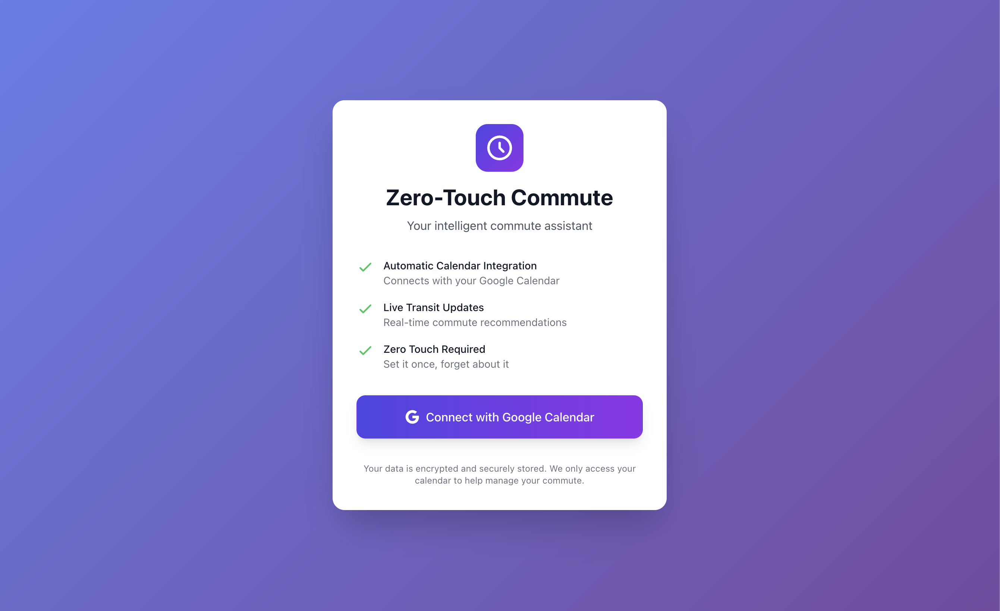
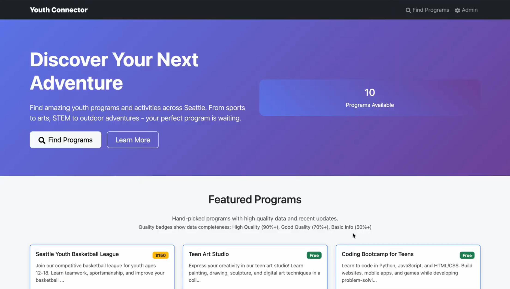
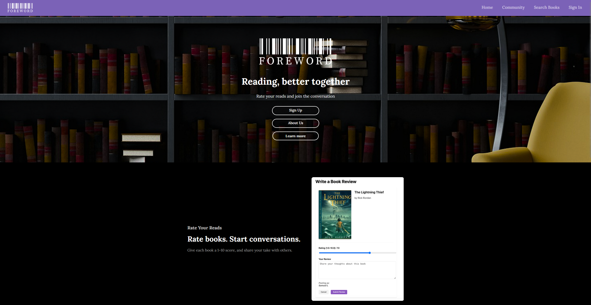

My Projects
Zero-Touch Commute Assistant (DubHacks 2025)
Zero-Touch Commute Assistant was a project we developed at DubHacks to automate the daily decision of "when to leave" for frequent commuters. We engineered a serverless, event-driven system using AWS Lambda, Bedrock, and the OneBusAway API to parse Google Calendar schedules and deliver real-time transit alerts. By leveraging Generative AI for semantic event classification, the app could intelligently understand a user's day without manual input. This project was a major step into cloud-native architecture for me. It shifted my focus from monolithic app development to orchestrating distinct cloud services, teaching me how to leverage AI and serverless functions to solve a specific, friction-heavy user problem under the time constraints of a hackathon.
Youth Connector (City of Seattle 2025)
Youth Connector was a solution we developed for the City of Seattle’s innovation hackathon, aimed to improve awareness and access to youth and young adult enrichment programs across the greater Seattle area. Using React, FastAPI, and BeautifulSoup, we built a platform that aggregates unstructured data from various city and non-city sources into a centralized, searchable catalog. We effectively combined the hackathon's concepts of catalog builders, curators, and sync agents to ensure data remained fresh, while our "Spark Finder" engine helped match users to opportunities based on their specific interests. Participating in this challenge highlighted the intersection of civic responsibility and technology for me. It required us to think critically about data accessibility and consistent synchronization, ensuring that our technical solution could genuinely improve awareness and access for youth across the city.
Foreword
Foreword is a social reading platform I developed with React, Firebase, and the OpenLibrary API. The project began when our team was tasked with addressing a Sustainable Development Goal. We chose to focus on education, specifically aiming to increase reading engagement among our peers. On the website, users can discover books, share reviews, and interact with a community of readers. Beyond the technical implementation, this project gave my team and I the chance to really dive into the software development cycle. We practiced defining functional requirements, making architectural decisions, writing specifications, and rigorously testing and debugging. The result was a polished MVP that I am immensely proud of, and a much deeper understanding of how to take an idea from concept to working product.
Bop It!

Bop It! was a fun challenge of a project where my team and I recreated the classic game as a full-stack web application. Built with React, Node.js, Express, and MongoDB, it featured secure login with Azure AD, real-time score tracking, and a competitive leaderboard. The main focus here was on the backend functionality, includingdesigning RESTful APIs, handling game logic, and ensuring user data persisted reliably. Choosing such a fun concept made the process of learning backend development both memorable and rewarding.
KanPet

KanPet was my first web app, a gamified task manager inspired by kanban boards. This project focused on frontend functionality, where my team and I designed the interface in Figma and Miro, then implemented it with React using Hooks-based state management. Users can create dynamic boards, track milestones, and earn cosmetic rewards for task completion. For me, the learning came from bridging design and implementation. This meant taking wireframes and turning them into functional features, while also considering how design choices affect usability and motivation.